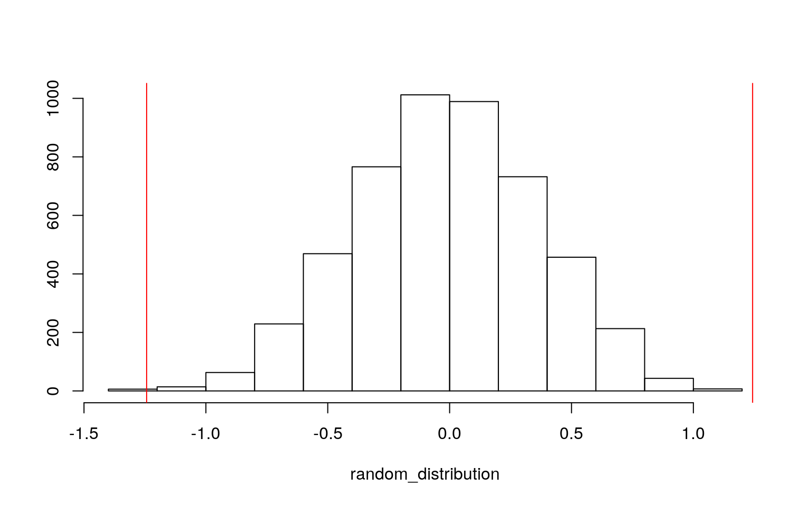
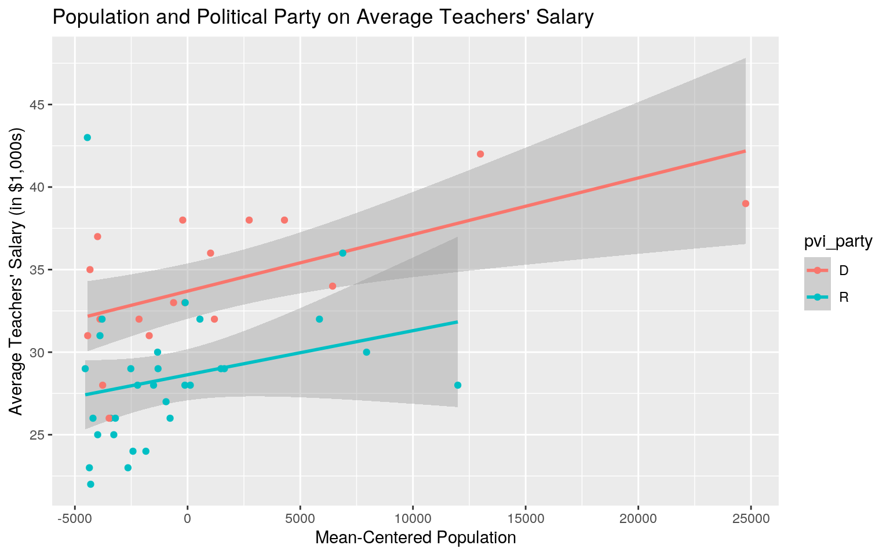
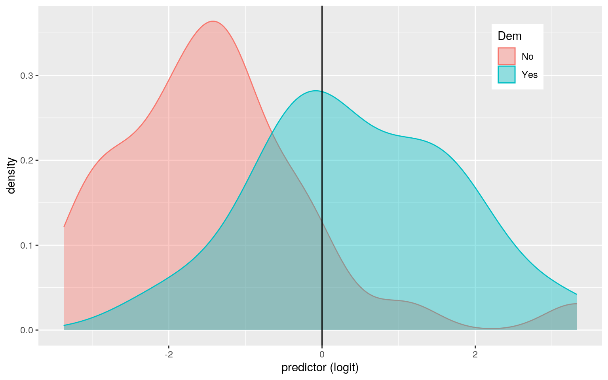
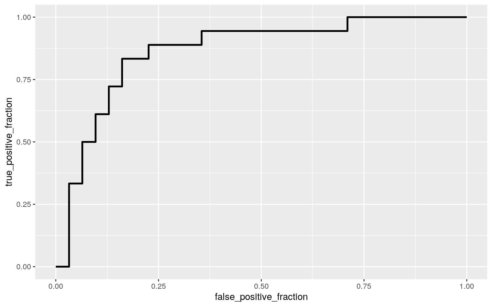
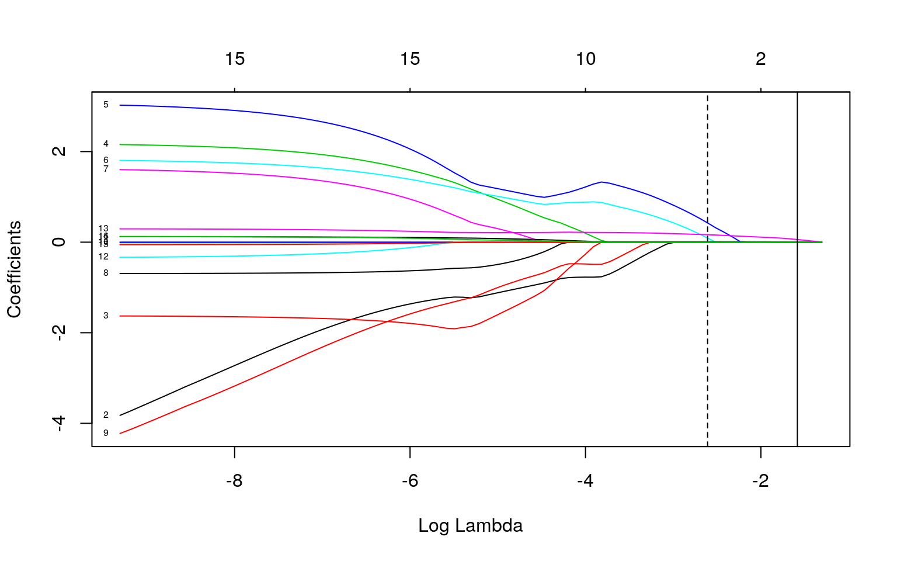

Introduce your dataset and each of your variables (or just your main variables if you have lots) in a paragraph. What are they measuring? How many observations?
My dataset is a compilation of two datasets from the server. The first, originally called "education", was from the carData package (originally labeled "States") and my second was called "partisan_lean_state" from the fivethirtyeight package. I also used stateabbr from the server to help combine the two packages on the basis of state. The variables in "education" are state, region (U.S. Census region), pop (population in 1,000s), SATV (average score of graduating high-school students in the state on the verbal component of the SAT), SATM (average score of graduating high-school students in the state on the math component of the SAT), percent (percent of graduating high school students in the state who took the SAT exam), dollars (state spending on public education, in $1,000s per student), and pay (average teacher's salary in the state, in $1000s). The second dataset, "partisan_lean_state", includes the state, pvi_party (the party of the vote), and the pvi_amount (the Cook Partisan Voting Index of the vote). The dataset "education" has 52 observations per variable while "partisan_lean_state" has 50 observations. Together, the dataset I am using ("Edu1") has 49 observations for each variable. I decided to continue with these datasets due to the increased relevance due to the election season and also because I enjoyed working with them for Project 1.
Perform a MANOVA testing whether any of your numeric variables (or a subset of them, if including them all is unreasonable or doesn't make sense) show a mean difference across levels of one of your categorical variables.
man <- manova(cbind(pop, dollars, pay, percent, SATV, SATM)~pvi_party, data=Edu)
summary(man)## Df Pillai approx F num Df den Df Pr(>F)
## pvi_party 1 0.42848 5.2481 6 42 0.000414 ***
## Residuals 47
## ---
## Signif. codes: 0 '***' 0.001 '**' 0.01 '*' 0.05 '.' 0.1
' ' 1summary.aov(man)## Response pop :
## Df Sum Sq Mean Sq F value Pr(>F)
## pvi_party 1 53656488 53656488 1.796 0.1866
## Residuals 47 1404132305 29875155
##
## Response dollars :
## Df Sum Sq Mean Sq F value Pr(>F)
## pvi_party 1 17.604 17.6043 13.86 0.0005263 ***
## Residuals 47 59.699 1.2702
## ---
## Signif. codes: 0 '***' 0.001 '**' 0.01 '*' 0.05 '.' 0.1
' ' 1
##
## Response pay :
## Df Sum Sq Mean Sq F value Pr(>F)
## pvi_party 1 376.16 376.16 21.718 2.627e-05 ***
## Residuals 47 814.05 17.32
## ---
## Signif. codes: 0 '***' 0.001 '**' 0.01 '*' 0.05 '.' 0.1
' ' 1
##
## Response percent :
## Df Sum Sq Mean Sq F value Pr(>F)
## pvi_party 1 6026 6026.0 14.13 0.0004713 ***
## Residuals 47 20044 426.5
## ---
## Signif. codes: 0 '***' 0.001 '**' 0.01 '*' 0.05 '.' 0.1
' ' 1
##
## Response SATV :
## Df Sum Sq Mean Sq F value Pr(>F)
## pvi_party 1 4844 4844.5 5.5913 0.02223 *
## Residuals 47 40722 866.4
## ---
## Signif. codes: 0 '***' 0.001 '**' 0.01 '*' 0.05 '.' 0.1
' ' 1
##
## Response SATM :
## Df Sum Sq Mean Sq F value Pr(>F)
## pvi_party 1 3529 3529.1 3.1772 0.08113 .
## Residuals 47 52205 1110.7
## ---
## Signif. codes: 0 '***' 0.001 '**' 0.01 '*' 0.05 '.' 0.1
' ' 1
##
## 3 observations deleted due to missingness .05/7## [1] 0.007142857 1-(.95^7)## [1] 0.3016627The MANOVA test showed significance by the p-value being less than 0.05 at 0.000414. Therefore, univariate ANOVAs were performed. Post-hoc t tests did not have to be permormed because the categorical variable (pvi_party) only has two groups - Democrat (D) and Republican (R). The variables dollars, pay, percent, and SATV proved to be significant with the univariate ANOVAs. Since 7 tests were performed, the bonferroni correction determined that the adjusted p-value is 0.00714 and that the probability of at least one Type I error is 30.17%. With this adjusted p-value, only dollars (p=0.0005263), pay (p=2.627e-05), and percent (p=0.0004713) are still significant and thus these variables were found to differ signficantly by political party.
group <- Edu1$pvi_party
DVs <- Edu1 %>% select(pop, dollars, pay, percent, SATV, SATM)
#Test multivariate normality for each group (null: assumption met)
sapply(split(DVs,group), mshapiro_test)## D R
## statistic 0.5484364 0.7079928
## p.value 2.174207e-06 1.528084e-06For the assumptions, the multivariate normality was not met, the p values per group are much smaller than 0.05 at 2.174207e-06 for the Democratic party and 1.528084e-06 for the Republican party. This may be because this data has not been altered in any way and has only 49 observations.
Perform some kind of randomization test on your data (that makes sense). The statistic can be anything you want (mean difference, correlation, F-statistic/ANOVA, chi-squared), etc. State null and alternative hypotheses, perform the test, and interpret the results. Create a plot visualizing the null distribution and the test statistic.
Edu1 %>% group_by(pvi_party) %>% summarize(means=mean(dollars)) %>% summarize(`mean_diff`=diff(means))## # A tibble: 1 x 1
## mean_diff
## <dbl>
## 1 -1.24random_distribution<-vector()
for(i in 1:5000){
new<-data.frame(dollars=sample(Edu1$dollars),pvi_party=Edu1$pvi_party)
random_distribution[i]<-mean(new[new$pvi_party=="R",]$dollars) -
mean(new[new$pvi_party=="D",]$dollars)
}
{hist(random_distribution,main="",ylab=""); abline(v = c(-1.243, 1.243),col="red")}
mean(random_distribution>1.243 | random_distribution< -1.243) ## [1] 4e-04H0: The difference in means is equal to 0. HA: The difference in means is not equal to 0.
A mean difference was performed because there are categorical and numeric variables. The observed difference in means, the test statistic, is 1.243342. This test statistic is represented by the red lines on the histogram. The p-value of 2e-04 proves that the null hypothesis is rejected and that the difference in means is not equal to 0.
Build a linear regression model predicting one of your response variables from at least 2 other variables, including their interaction. Mean-center any numeric variables involved in the interaction.
Edu1$pop_c <- Edu1$pop - mean(Edu1$pop, na.rm = T)
edu_fit <- lm(pay ~ pvi_party * pop_c, data=Edu1)
summary(edu_fit)##
## Call:
## lm(formula = pay ~ pvi_party * pop_c, data = Edu1)
##
## Residuals:
## Min 1Q Median 3Q Max
## -6.5025 -2.1124 -0.6004 1.9545 15.5548
##
## Coefficients:
## Estimate Std. Error t value Pr(>|t|)
## (Intercept) 3.370e+01 9.270e-01 36.349 < 2e-16 ***
## pvi_partyR -5.064e+00 1.166e+00 -4.342 7.93e-05 ***
## pop_c 3.428e-04 1.272e-04 2.694 0.00987 **
## pvi_partyR:pop_c -7.581e-05 2.170e-04 -0.349 0.72852
## ---
## Signif. codes: 0 '***' 0.001 '**' 0.01 '*' 0.05 '.' 0.1
' ' 1
##
## Residual standard error: 3.862 on 45 degrees of freedom
## Multiple R-squared: 0.4359, Adjusted R-squared: 0.3983
## F-statistic: 11.59 on 3 and 45 DF, p-value: 9.37e-06From the coefficient estimates, the intercept 3.370e+01 shows the mean pay when the centered population equals zero and the political party is Democrat. pvi_partyR (-5.064e+00) is the difference bewteen the two pays between parties when the centered population is 0. The pop_c means that for every unit increase in the centered population, the pay goes up by 3.428e-04 (in $1000s).
ggplot(Edu1, aes(pop_c, pay, color = pvi_party)) +
geom_smooth(method = "lm") +
geom_point() +
ggtitle("Population and Political Party on Average Teachers' Salary") +
scale_x_continuous(breaks= seq(-10000,30000,5000), name="Mean-Centered Population") +
scale_y_continuous(breaks= seq(0,60,5), name="Average Teachers' Salary (in $1,000s)")
edu_fit <- lm(pay ~ pvi_party * pop_c, data=Edu1)
fitted <- edu_fit$fitted.values
resids <- edu_fit$residuals
#Shapiro-Wilk normality test
shapiro.test(resids) #H0 : true distribution is normal ##
## Shapiro-Wilk normality test
##
## data: resids
## W = 0.90528, p-value = 0.0008212#Breusch-Pagan Test for homoskedasticity
bptest(edu_fit) ##
## studentized Breusch-Pagan test
##
## data: edu_fit
## BP = 1.6352, df = 3, p-value = 0.6514#normality did not pass but data is homoskedasticFrom checking the assumptions, we see that normality is violated because the p-value for the Shapiro-Wilk normality test is below 0.05 at 0.0008212. We also see that the data is homoskedastic since the data passed the Breusch-Pagan test with a p-value of 0.6514.
summary(edu_fit)$coef## Estimate Std. Error t value Pr(>|t|)
## (Intercept) 3.369591e+01 0.9270105123 36.3490044
5.342339e-35
## pvi_partyR -5.063660e+00 1.1663038527 -4.3416304
7.928355e-05
## pop_c 3.427990e-04 0.0001272231 2.6944713 9.874980e-03
## pvi_partyR:pop_c -7.580899e-05 0.0002170524 -0.3492659
7.285188e-01coeftest(edu_fit, vcov = vcovHC(edu_fit))##
## t test of coefficients:
##
## Estimate Std. Error t value Pr(>|t|)
## (Intercept) 3.3696e+01 8.4143e-01 40.0462 < 2.2e-16 ***
## pvi_partyR -5.0637e+00 1.1356e+00 -4.4590 5.436e-05 ***
## pop_c 3.4280e-04 2.4613e-04 1.3928 0.1705
## pvi_partyR:pop_c -7.5809e-05 3.4715e-04 -0.2184 0.8281
## ---
## Signif. codes: 0 '***' 0.001 '**' 0.01 '*' 0.05 '.' 0.1
' ' 1Using robust standard errors, we see that pvi_partyR is significant with a p-value of 5.436e-05. This differs in that pop_c is no longer significant. The p-value for pvi_partyR decreased from 7.93e-05 to 5.436e-05. Further, the standard error for pvi_partyR decreased from 1.166e+00 to 1.1356e+00.
summary(edu_fit)$r.sq## [1] 0.4359392The outcome explains 43.59% or 0.4359 of the variation in the model.
Rerun same regression model (with the interaction), but this time compute bootstrapped standard errors (either by resampling observations or residuals). Discuss any changes you observe in SEs and p-values using these SEs compared to the original SEs and the robust SEs)
boot_edu <- Edu1 %>% sample_frac(replace=TRUE)
samp_distn <- replicate(5000, {
boot_edu <- Edu1 %>% sample_frac(replace=TRUE)
fit<-lm(pay ~ pvi_party * pop_c, data=boot_edu)
coef(fit)
})
## Estimated SEs
samp_distn%>%t%>%as.data.frame%>%summarize_all(sd)## (Intercept) pvi_partyR pop_c pvi_partyR:pop_c
## 1 0.7708353 1.033575 0.0001773235 0.0002847103## Empirical 95% CI
samp_distn%>%t%>%as.data.frame%>%pivot_longer(1:3)%>%group_by(name)%>%
summarize(lower=quantile(value,.025), upper=quantile(value,.975))## # A tibble: 3 x 3
## name lower upper
## <chr> <dbl> <dbl>
## 1 (Intercept) 32.2 35.3
## 2 pop_c 0.000189 0.000825
## 3 pvi_partyR -7.07 -3.04The standard error for pvi_partyR decreased from 1.166 and 1.1356 to 1.047054, meaning that the p-value also decreased for pvi_partyR.
Fit a logistic regression model predicting a binary variable
edu5 <- Edu1 %>% select(-pvi_party)
edu5 <- edu5 %>% mutate(Dem = case_when(Democratic == 1~"Yes", Democratic == 0 ~ "No"))
edufit2 <- glm(Democratic ~ pay + dollars, data = edu5, family="binomial")
coeftest(edufit2)##
## z test of coefficients:
##
## Estimate Std. Error z value Pr(>|z|)
## (Intercept) -10.27483 3.08063 -3.3353 0.0008521 ***
## pay 0.28703 0.14266 2.0120 0.0442232 *
## dollars 0.15911 0.56245 0.2829 0.7772618
## ---
## Signif. codes: 0 '***' 0.001 '**' 0.01 '*' 0.05 '.' 0.1
' ' 1coef(edufit2)%>%exp%>%round(3)%>%data.frame## .
## (Intercept) 0.000
## pay 1.332
## dollars 1.172The coefficient estimates determine the log odds. Going up by one unit of pay multiplies odds by a factor of 1.332. Going up by one unit of dollars multiplies odds by a factor of 1.172. This was determined by exponentiating the coefficients.
Confusion Matrix
edu5$probs <- predict(edufit2, type="response")
table(predict=as.numeric(edu5$probs>.5),truth=edu5$Democratic) %>% addmargins## truth
## predict 0 1 Sum
## 0 28 8 36
## 1 3 10 13
## Sum 31 18 49class_diag(edu5$probs,edu5$Democratic)## acc sens spec ppv f1 auc
## TRUE NaN NaN NaN NaN NaN 0.8566308The accuracy is 0.7755, the sensitivity is 0.5556, the specificity is 0.9032, the precision is 0.7692. Also, the AUC is 0.857 indicating a good model!
Density plot of the log-odds (logit) colored/grouped by your binary outcome variable
fit3 <- glm(Democratic ~ pay + dollars, data = edu5, family=binomial(link="logit"))
edu5$logit <- predict(fit3,type="link")
edu5 %>% ggplot()+geom_density(aes(logit, color=Dem, fill= Dem), alpha=.4)+
theme(legend.position=c(.85,.85))+geom_vline(xintercept=0)+xlab("predictor (logit)")
ROC curve (plot)
ROCplot<-ggplot(fit3)+geom_roc(aes(d=Democratic, m=pay + dollars), n.cuts=0)
ROCplot
calc_auc(ROCplot)## PANEL group AUC
## 1 1 -1 0.8637993The ROC plot proves that this model is good with an AUC of 0.864. This curve shows the "tradeoff between sensitivity and specificity.(Woodward)"
Perform a logistic regression predicting the same binary response variable from ALL of the rest of your variables (the more, the better!)
glmfit <- glm(Democratic~region+pvi_amount+pop+dollars+pay+percent+SATV+SATM,data=edu5,family="binomial")probs <- predict(glmfit,type="response")
class_diag(probs,edu5$Democratic)## acc sens spec ppv f1 auc
## TRUE NaN NaN NaN NaN NaN 0.9336918These in-sample classification diagnostics show that the model is great (AUC = 0.9337).
10-fold CV
k=10
data<-edu5[sample(nrow(edu5)),]
folds<-cut(seq(1:nrow(edu5)),breaks=k,labels=F)
diags<-NULL
for(i in 1:k){
train<-data[folds!=i,]
test<-data[folds==i,]
truth<-test$Democratic
fit<-glm(Democratic~(region+pvi_amount+pop+dollars+pay+percent+SATV+SATM),data=train,family="binomial")
probs<-predict(fit,newdata = test,type="response")
diags<-rbind(diags,class_diag(probs,truth))
}summarize_all(diags,mean) ## acc sens spec ppv f1 auc
## 1 NaN NaN NaN NaN NaN 0.55The AUC shows that the model is in fact poor (AUC=0.6389).
LASSO
y<-as.matrix(edu5$Democratic)
edu_preds<-model.matrix(Democratic~(-1+region+pvi_amount+pop+dollars+pay+percent+SATV+SATM),data=edu5)
cv <- cv.glmnet(edu_preds,y, family="binomial")
{plot(cv$glmnet.fit, "lambda", label=TRUE); abline(v = log(cv$lambda.1se)); abline(v = log(cv$lambda.min),lty=2)}
lasso_fit<-glmnet(edu_preds,y,family="binomial",lambda=cv$lambda.1se)
probss <- predict(lasso_fit, edu_preds , type="response")
coef(lasso_fit)## 17 x 1 sparse Matrix of class "dgCMatrix"
## s0
## (Intercept) -2.309215
## regionENC .
## regionESC .
## regionMA .
## regionMTN .
## regionNE .
## regionPAC .
## regionSA .
## regionWNC .
## regionWSC .
## pvi_amount .
## pop .
## dollars .
## pay 0.057512
## percent .
## SATV .
## SATM .class_diag(probss, edu5$Democratic)## acc sens spec ppv f1 auc
## TRUE NaN NaN NaN NaN NaN 0.8539427table(prediction=as.numeric(probss>.5), truth=edu5$Democratic) %>% addmargins## truth
## prediction 0 1 Sum
## 0 30 17 47
## 1 1 1 2
## Sum 31 18 49Through LASSO only the variable pay is retained.
Perform 10-fold CV using only the variables lasso selected
k=10
data <- edu5 %>% sample_frac
folds <- cut(seq(1:nrow(edu5)), breaks=k,labels=F)
diags<-NULL
for(i in 1:k){
train <- data[folds!=i,]
test <- data[folds==i,]
truth <- test$Democratic
fit <- glm(Democratic~pay, data=train, family="binomial")
probs <- predict(fit, newdata=test, type="response")
diags <- rbind(diags, class_diag(probs,truth))
} diags%>%summarize_all(mean)## acc sens spec ppv f1 auc
## 1 NaN NaN NaN NaN NaN 0.7458333The out-of-sample AUC is less than the logistic regressions above. The AUC dropped from 0.6389 in the 10-fold CV.